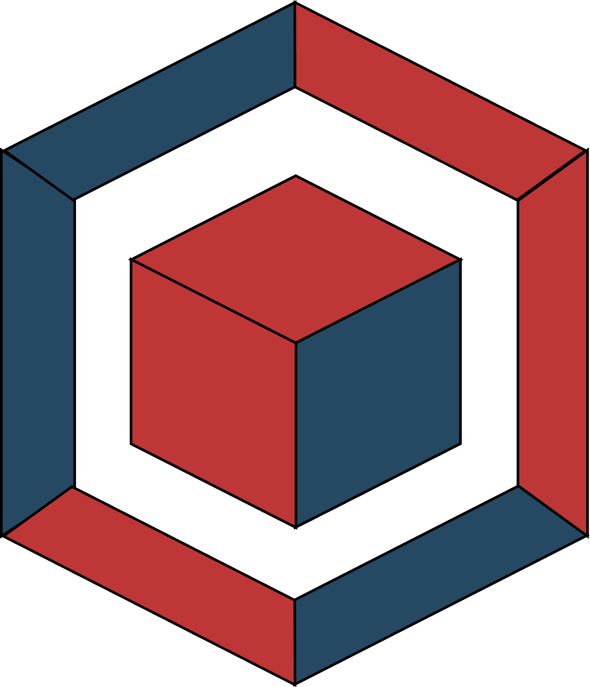

Juego Limones
Del cielo caen limones, atrapa 10 para hacer tu limonada, pero si dejas que 3 caigan al suelo deberás reiniciar de 0.
Ver proyecto
Portafolio de proyectos
Del cielo caen limones, atrapa 10 para hacer tu limonada, pero si dejas que 3 caigan al suelo deberás reiniciar de 0.
Ver proyectoGuía a tu gatito a cazar su comida antes de que acabe el tiempo.
Ver proyectoEl clásico juego de la culebrita. Guía a la serpiente para comer y crecer sin chocar contra los bordes o su propio cuerpo.
Ver proyectoHerramienta web para simular préstamos bancarios y calcular rápidamente las cuotas mensuales a pagar.
Ver proyectoCalculadora interactiva para determinar y organizar fácilmente las comisiones generadas en base a las ventas.
Ver proyecto